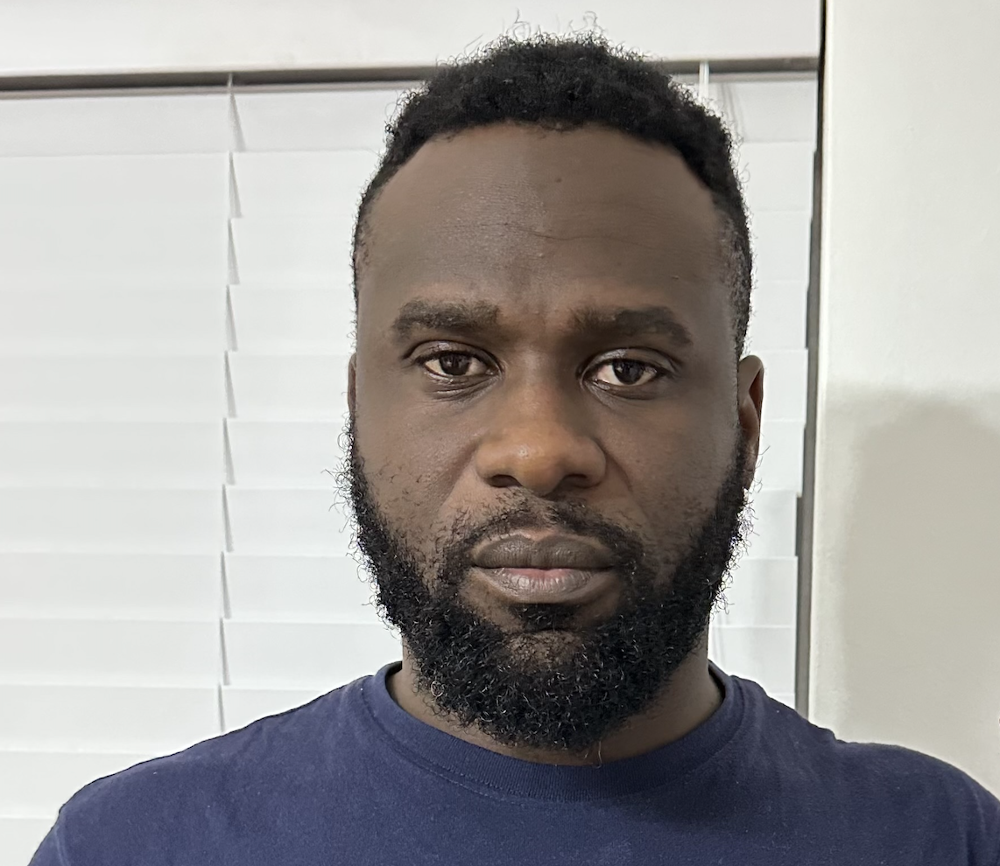

Reginald Owusu

Objective Statement
A dedicated and compassionate deputy manager with over three years experience in empowering individuals with learning
disabilities and autism as well as leading staff teams. I excel in ensuring compliance with CQC standards, and relevant legal
frameworks in social care. Skilled in staff leadership, resource management, and regulatory compliance, I am committed to
upholding the highest standards of care while fostering a culture of dignity, respect, and compassion. Passionate about enhancing the
quality of life for residents, I strive to create personalised care plans that promotes person-centred approach, ensuring residents’
well-being and satisfaction are prioritised at all times.
Education
- Level 5 in Leadership and Management (Lifetime Training QCF) Feb 2025
- Advanced Management Development Programme AMDP (Choice Care Group) Dec 2023
- Access to HE Science combined with Social Sciences (Abingdon and Witney College) May 2021
- Health and Safety in the Workplace (UK) Diploma (New Skills Academy) Aug 2020
- West African Secondary School Examination (GCSE) (Achimota School) June 2006
Work Experience
- Deputy Manager – Choice Care Group ----------- Apr 2022 - Present
- Supervised and supported a team of Support Workers through regular meetings, performance appraisals, issue resolution,
and training sessions.
- Ensured compliance with organisational policies, maintained high care standards, implemented best practices, and
promoted continuous improvement and innovation within the team.
- Ensured safety and well-being, conducted risk assessments, responded to concerns promptly, and promoted a positive
environment.
- Demonstrated exemplary behaviour, mentored team members, fostered respect and collaboration, and led by example.
- Solicited feedback to improve service and addressed complaints empathetically.
- Maintained accurate care records, prepared and submitted reports, and ensured compliance with legal frameworks.
- Senior Support Worker – SeeAbility Organisation -------May 2021 – March 2022
- Ensured satisfaction with care and built positive relationships with individuals and families.
- Identified residents needs across various domains and made informed decisions for appropriate actions in consultation with
the management team.
- Administered medication accurately and safely, ensuring compliance with healthcare protocols and individual care plans.
- Ensured all relevant documents were accurately completed and maintained to CQC standards.
- Responsible for supervising staff, leading shifts, ensuring adherence to placement plans, policies, procedures, and risk
assessments, managing rotas, and supporting education initiatives.
Skills
- Web Development
- Javascript
- CSS
- React (backend)